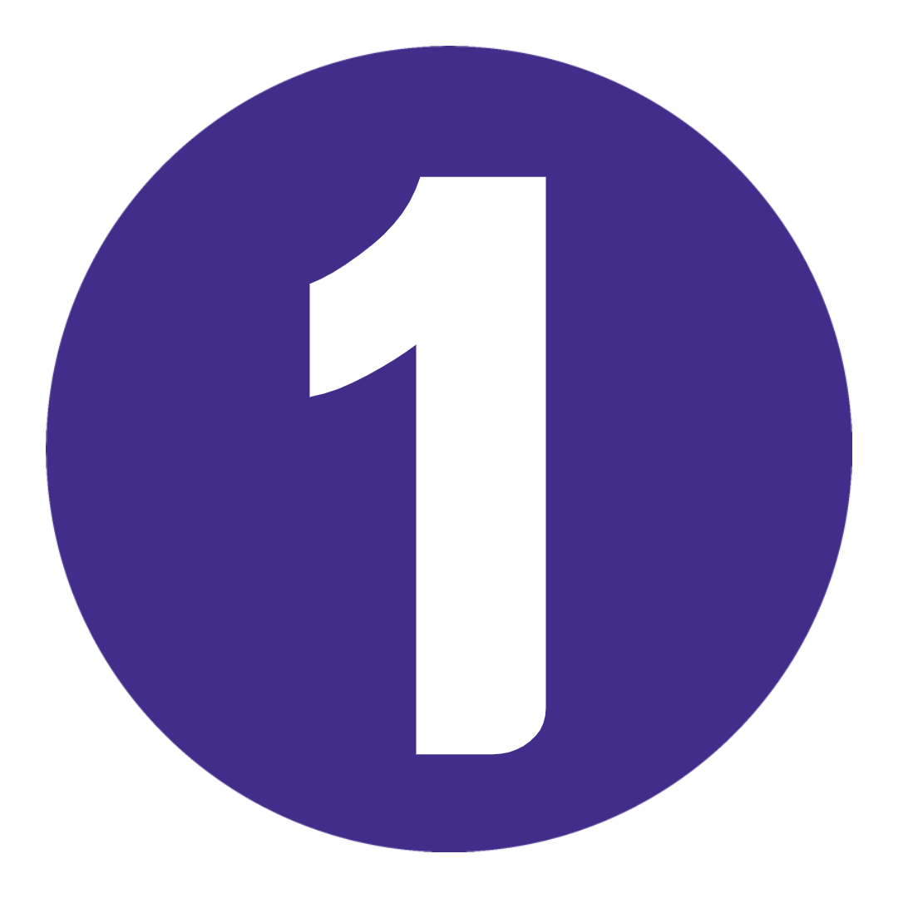
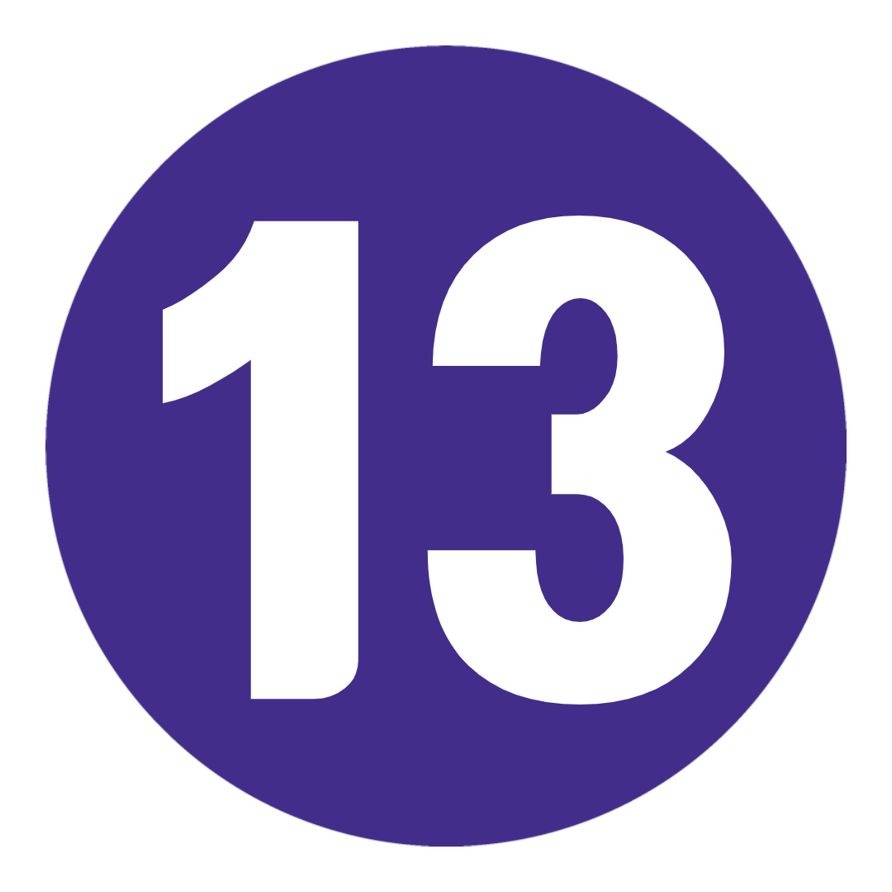
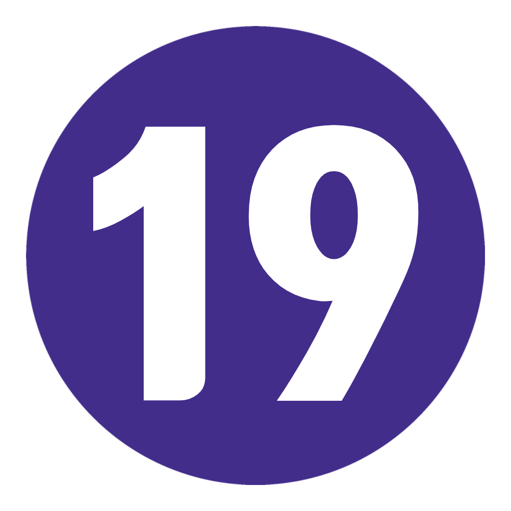

여행 개요
지 도
TRIP VIBE = 사교 활동, 버킷리스트 명소, 즐거운 시간이 가득한 빠른 속도로 진행되는 재미.
중부 및 동부 유럽의 영광스러운 뒤죽박죽을 발견하고 싶으십니까? 당신처럼 펌핑된 여러 여행자와 함께 여행을 공유할 준비가 되셨습니까? 당신은 바로 이곳에 있습니다.
베니스의 장엄한 운하에서 프렌치 리비에라의 반짝이는 해안선, 부다페스트의 폐허 바, 고딕 양식의 프라하에 이르기까지, 당신의 가장 거친 유로화 꿈은 훌륭하고 진정으로 이루어질 것입니다.
여행 일정
-
 영국 런던에서 프랑스 파리까지
일상을 뒤로하고 특별한 것을 발견할 준비를 하십시오. 우리는 일찍 길을 나서 영국 해협을 가로질러 운전할 것입니다. 파리, 우리가 도착했습니다. 코코 샤넬, 모나리자 및 세계에서 가장 맛있는 마카롱의 고향 - 파리는 문화, 패션 및 군침이 도는 음식의 모든 것을 위한 유럽 수도로 명성을 얻었습니다. 오늘 밤 함께 저녁 식사를 하기 전에 드라이브 투어에서 모든 쇼 스토퍼를 확인하세요. 꼭 드세요, 죄송합니다!
키워드 저녁 + 파리 드라이브 -
 파리오늘, 파리는 당신의 것입니다. 버킷 리스트에 체크 표시를 하고, 뒷골목을 탐방하거나, 시내 최고의 제과점을 찾아보세요. 워커 아님? 옵션으로 제공되는 자전거 투어로 다리를 쭉 뻗고 도시를 순항하세요. 또는 센 강을 유람하는 동안 물에서 파리의 분위기를 만끽하십시오. 오늘 밤은 카바레에서 자유시간을 보내세요. 생각해보세요: 반짝이는 조명, 반짝이는 깃털, 놀라운 곡예사!
파리오늘, 파리는 당신의 것입니다. 버킷 리스트에 체크 표시를 하고, 뒷골목을 탐방하거나, 시내 최고의 제과점을 찾아보세요. 워커 아님? 옵션으로 제공되는 자전거 투어로 다리를 쭉 뻗고 도시를 순항하세요. 또는 센 강을 유람하는 동안 물에서 파리의 분위기를 만끽하십시오. 오늘 밤은 카바레에서 자유시간을 보내세요. 생각해보세요: 반짝이는 조명, 반짝이는 깃털, 놀라운 곡예사!
추가 옵션 파리 자전거 투어: €30부터 / 세느강 유람선: €10부터 / 파리 카바레 쇼: €65부터 -
 파리에서 스위스 알프스로 신나는 음악과 아름다운 전망 – 우리는 산으로 향할 때 눈 덮인 봉우리를 찾기 위해 파리 거리에서 거래를 할 것입니다. 'Top of Europe', 72개의 폭포, 스위스에서 가장 큰 자연 보호 구역 중 하나인 'Top of Europe'의 본고장 - 오늘 밤 우리는 입이 떡 벌어지는 스위스 알프스에서 잠을 자고 있습니다. 시원한 음료와 함께 신선한 고산 공기에 다시 앉아 달러 상점에서 공황 상태로 구입 한 카드 놀이를 파십시오. 가세요, 누구?
파리에서 스위스 알프스로 신나는 음악과 아름다운 전망 – 우리는 산으로 향할 때 눈 덮인 봉우리를 찾기 위해 파리 거리에서 거래를 할 것입니다. 'Top of Europe', 72개의 폭포, 스위스에서 가장 큰 자연 보호 구역 중 하나인 'Top of Europe'의 본고장 - 오늘 밤 우리는 입이 떡 벌어지는 스위스 알프스에서 잠을 자고 있습니다. 시원한 음료와 함께 신선한 고산 공기에 다시 앉아 달러 상점에서 공황 상태로 구입 한 카드 놀이를 파십시오. 가세요, 누구?
키워드 아침밥 -
 스위스 알프스 스위스 알프스에 Tinder 약력이 있다면 다음과 같이 읽힐 것입니다. 재미있는 야외 활동 애호가 – 함께 모험을 나눌 아드레날린 중독자를 찾고 있습니다. 오른쪽으로 스와이핑? 당근 빠따 지. 등산. 자전거 타기. 스카이 다이빙. 헬리콥터 탑승. 이 곳은 모든 것을 갖추고 있습니다. 더 기초적인 것을 원하십니까? 나이키를 신고 계곡 바닥을 걷습니다. 또는 융프라우 산 정상을 선택적으로 방문하기 위해 융프라우반 철도에 올라타십시오. 무엇을 선택하시든 저희를 믿으세요. 며칠 동안 조회수를 볼 수 있습니다.
스위스 알프스 스위스 알프스에 Tinder 약력이 있다면 다음과 같이 읽힐 것입니다. 재미있는 야외 활동 애호가 – 함께 모험을 나눌 아드레날린 중독자를 찾고 있습니다. 오른쪽으로 스와이핑? 당근 빠따 지. 등산. 자전거 타기. 스카이 다이빙. 헬리콥터 탑승. 이 곳은 모든 것을 갖추고 있습니다. 더 기초적인 것을 원하십니까? 나이키를 신고 계곡 바닥을 걷습니다. 또는 융프라우 산 정상을 선택적으로 방문하기 위해 융프라우반 철도에 올라타십시오. 무엇을 선택하시든 저희를 믿으세요. 며칠 동안 조회수를 볼 수 있습니다.
추가 옵션 융프라우('유럽의 정상')로의 경치 좋은 여행: 161.80 CHF부터 / 스위스 알프스에서 스카이다이빙: 390CHF(추가 보증금 €50)부터 / 경치 좋은 헬리콥터 타기: 195 CHF부터 (+ 보증금 €20) -
 스위스 알프스에서 프랑스 리비에라로
햇살에 흠뻑 젖고 세련된 'Coast of Blue'로 향하는 동안 gruezi를 봉쥬르로 바꾸십시오. 부자와 유명인을 위한 놀이터. 친구 여러분, 여기는 프랑스 리비에라입니다. 우리는 가방을 내려놓고 오후에 모든 것을 가져갈 것입니다. 해안가 산책로를 탐험하고, 슈퍼요트에서 눈을 떼고, 물놀이를 위해 해변으로 가거나, 지역에서 아주 좋은 해산물을 찾으십시오. 오늘 밤, 화려한 밤을 위해 갱단을 모으십시오. 오 라라!
스위스 알프스에서 프랑스 리비에라로
햇살에 흠뻑 젖고 세련된 'Coast of Blue'로 향하는 동안 gruezi를 봉쥬르로 바꾸십시오. 부자와 유명인을 위한 놀이터. 친구 여러분, 여기는 프랑스 리비에라입니다. 우리는 가방을 내려놓고 오후에 모든 것을 가져갈 것입니다. 해안가 산책로를 탐험하고, 슈퍼요트에서 눈을 떼고, 물놀이를 위해 해변으로 가거나, 지역에서 아주 좋은 해산물을 찾으십시오. 오늘 밤, 화려한 밤을 위해 갱단을 모으십시오. 오 라라!
키워드 아침밥 -
 모나코 방문을 포함한 프랑스 리비에라오늘 아침, 당신은 당신을! 해변에서 한가롭게 시간을 보내거나 니스의 구시가지에 있는 디자이너 부티크에서 마음껏 뛰어보세요. 선택은 당신의 것입니다. 나중에: Trip Leader와 함께 모나코의 도보 여행에서 제트기를 사용하여 롤링하면서 한 단계 높일 것입니다. 1%가 어떻게 살고 있는지(힌트: 페라리와 캐비어 목욕이 관련됨), '영화 세트장 찾기'를 플레이하면서 세계적 수준의 카지노를 거닐며, 이 주변에서 소용돌이치는 부에 대해 더 많은 사실을 알게 되면서 입이 떡 벌어지게 됩니다. 도시 슬래시 국가.
모나코 방문을 포함한 프랑스 리비에라오늘 아침, 당신은 당신을! 해변에서 한가롭게 시간을 보내거나 니스의 구시가지에 있는 디자이너 부티크에서 마음껏 뛰어보세요. 선택은 당신의 것입니다. 나중에: Trip Leader와 함께 모나코의 도보 여행에서 제트기를 사용하여 롤링하면서 한 단계 높일 것입니다. 1%가 어떻게 살고 있는지(힌트: 페라리와 캐비어 목욕이 관련됨), '영화 세트장 찾기'를 플레이하면서 세계적 수준의 카지노를 거닐며, 이 주변에서 소용돌이치는 부에 대해 더 많은 사실을 알게 되면서 입이 떡 벌어지게 됩니다. 도시 슬래시 국가.
키워드 Trip Leader와 함께하는 모나코 도보 여행 -
 프렌치 리비에라에서 피사를 거쳐 이탈리아 피렌체로
마지막으로 한 번의 수영으로 짜내십시오. 커피 내려. 그리고 프랑스로 손을 흔들어 보세요. 우리는 로맨스의 본고장이자 탄수화물이 풍부한 요리의 어머니인 부츠 모양의 반도로 향하고 있습니다. 첫 번째 목적지는 피사입니다. 저 사진을 선택한다면 독특한 것을 생각해 보세요(제발). 그런 다음: 토스카나 요리의 수도이자 젤라토의 발상지인 우리가 음식을 노래하게 하십시오. 일몰을 보기 위해 아르노 강을 따라 산책하기 전에 최고의 라비올리를 어디에서 찾을 수 있는지 여행 리더에게 퀴즈를 내십시오. 누가 노래방이라고 했나요? 기분이 좋다면 나중에 바에서 가족과 함께 고전의 대결에 참여하십시오.
프렌치 리비에라에서 피사를 거쳐 이탈리아 피렌체로
마지막으로 한 번의 수영으로 짜내십시오. 커피 내려. 그리고 프랑스로 손을 흔들어 보세요. 우리는 로맨스의 본고장이자 탄수화물이 풍부한 요리의 어머니인 부츠 모양의 반도로 향하고 있습니다. 첫 번째 목적지는 피사입니다. 저 사진을 선택한다면 독특한 것을 생각해 보세요(제발). 그런 다음: 토스카나 요리의 수도이자 젤라토의 발상지인 우리가 음식을 노래하게 하십시오. 일몰을 보기 위해 아르노 강을 따라 산책하기 전에 최고의 라비올리를 어디에서 찾을 수 있는지 여행 리더에게 퀴즈를 내십시오. 누가 노래방이라고 했나요? 기분이 좋다면 나중에 바에서 가족과 함께 고전의 대결에 참여하십시오.
키워드 아침밥 + 피사의 사탑 방문 -
 피렌체-로마오늘 아침 우리는 이 문화의 수도에 대해 더 깊이 알아볼 것입니다. 지역 가이드와 함께 수세기에 걸친 역사를 거닐며 피렌체만이 제공할 수 있는 모든 예술적 매력과 눈부신 건축물에 흠뻑 빠져보세요. 우피치 미술관? 진드기. 베키오 다리? 진드기. 시뇨리아 광장? 진드기. 그리고 압도적인 두오모? 큰. 지방. 진드기. 다음 중지: 로마. 하루가 끝나기 전에 판테온을 지나고 스페인 계단에 앉아 거대한 콜로세움을 둘러보고 트레비 분수에 2센트를 던질 것입니다. 분수에 동전 하나를 던지면 로마로 돌아간다는 전설이 있습니다. 두 개를 넣으면 여기에서 사랑을 찾을 수 있습니다. 세 개의 동전을 던지고 싶습니까? 축하합니다 - 당신은 결혼합니다! 그것은 빠르게 확대되었습니다.
피렌체-로마오늘 아침 우리는 이 문화의 수도에 대해 더 깊이 알아볼 것입니다. 지역 가이드와 함께 수세기에 걸친 역사를 거닐며 피렌체만이 제공할 수 있는 모든 예술적 매력과 눈부신 건축물에 흠뻑 빠져보세요. 우피치 미술관? 진드기. 베키오 다리? 진드기. 시뇨리아 광장? 진드기. 그리고 압도적인 두오모? 큰. 지방. 진드기. 다음 중지: 로마. 하루가 끝나기 전에 판테온을 지나고 스페인 계단에 앉아 거대한 콜로세움을 둘러보고 트레비 분수에 2센트를 던질 것입니다. 분수에 동전 하나를 던지면 로마로 돌아간다는 전설이 있습니다. 두 개를 넣으면 여기에서 사랑을 찾을 수 있습니다. 세 개의 동전을 던지고 싶습니까? 축하합니다 - 당신은 결혼합니다! 그것은 빠르게 확대되었습니다.
키워드 아침밥 + 피렌체 도보여행 + 로마 도보여행 -
 로마이 고대 도시를 탐험할 수 있는 자유 시간은 48시간입니다. 거기에 나가서 자신의 자발적인, 이것이 당신이 하려는 일을 하십시오. 그러나 현지 팁이 필요하면 지원해 드립니다. 도시의 다른 전망을 보려면 Knights of Malta Keyhole으로 가십시오. 로스트 푸드 팩토리(Lost Food Factory)(아마도 도시 최고의 샌드위치 가게 중 하나)에서 식사를 즐겨보세요. Villa Borghese Park에서 피크닉을 멈추고 모든 것을 즐기십시오. 한 조각 더 먹을 수 있는 공간이 있습니까? 피자리움에 들러보세요. 여기서 점심 시간 러시는 오래 기다릴 수 있지만 그만한 가치가 있습니다 (우리는 arancini 공이 특별하다고 들었습니다).
로마이 고대 도시를 탐험할 수 있는 자유 시간은 48시간입니다. 거기에 나가서 자신의 자발적인, 이것이 당신이 하려는 일을 하십시오. 그러나 현지 팁이 필요하면 지원해 드립니다. 도시의 다른 전망을 보려면 Knights of Malta Keyhole으로 가십시오. 로스트 푸드 팩토리(Lost Food Factory)(아마도 도시 최고의 샌드위치 가게 중 하나)에서 식사를 즐겨보세요. Villa Borghese Park에서 피크닉을 멈추고 모든 것을 즐기십시오. 한 조각 더 먹을 수 있는 공간이 있습니까? 피자리움에 들러보세요. 여기서 점심 시간 러시는 오래 기다릴 수 있지만 그만한 가치가 있습니다 (우리는 arancini 공이 특별하다고 들었습니다). -
 로마
회오리바람에 휘날리는 베스파, 에스프레소, 두 뺨 키스, 원하는 방식의 피자로 하루 만에 최고의 로마의 휴일을 만드십시오. 바티칸 시국의 선택적인 투어에서 당신의 축복을 세고 2500년 가치의 역사를 가진 'I-spy'를 플레이하십시오. 더 원해? 비아 콘도티(Via Condotti)에 들를 때까지 쇼핑을 하고, 포로 로마노와 콜로세움의 멋진 전망을 보기 위해 카피톨리네 언덕으로 향하거나, 나보나 광장(Piazza Navona)에서 잠시 휴식을 취하여 약간의 dolce far niente(맛있는 나태함)를 즐길 수 있습니다. 나중에: 여행 동료를 모아 로마 스타일로 파티를 준비하십시오(그러나 검투사가 적을수록 Negroni가 더 많음).
로마
회오리바람에 휘날리는 베스파, 에스프레소, 두 뺨 키스, 원하는 방식의 피자로 하루 만에 최고의 로마의 휴일을 만드십시오. 바티칸 시국의 선택적인 투어에서 당신의 축복을 세고 2500년 가치의 역사를 가진 'I-spy'를 플레이하십시오. 더 원해? 비아 콘도티(Via Condotti)에 들를 때까지 쇼핑을 하고, 포로 로마노와 콜로세움의 멋진 전망을 보기 위해 카피톨리네 언덕으로 향하거나, 나보나 광장(Piazza Navona)에서 잠시 휴식을 취하여 약간의 dolce far niente(맛있는 나태함)를 즐길 수 있습니다. 나중에: 여행 동료를 모아 로마 스타일로 파티를 준비하십시오(그러나 검투사가 적을수록 Negroni가 더 많음).
추가 옵션 바티칸 시국 가이드 투어: €45부터 -
 로마-베니스거짓말이 아닙니다. 오늘은 장거리 운전을 해야 합니다. 지금이야말로 새로운 친구와 스냅 사진을 공유하고, zzzz를 따라잡고, '집세'를 문자로 보낼 수 있는 기회입니다. 나중에 우리는 400개가 넘는 다리가 있는 플로팅 시티(Floating City)에 주차하고 비발디(Vivaldi)의 탄생지입니다. 참고로 우리는 베니스에 대해 이야기하고 있습니다.
로마-베니스거짓말이 아닙니다. 오늘은 장거리 운전을 해야 합니다. 지금이야말로 새로운 친구와 스냅 사진을 공유하고, zzzz를 따라잡고, '집세'를 문자로 보낼 수 있는 기회입니다. 나중에 우리는 400개가 넘는 다리가 있는 플로팅 시티(Floating City)에 주차하고 비발디(Vivaldi)의 탄생지입니다. 참고로 우리는 베니스에 대해 이야기하고 있습니다.
키워드 아침밥
추가옵션 맞춤 여행 티셔츠 또는 후드티를 받으세요: 최저 €21 -
 베니스오늘 우리는 도보 여행을 통해 베니스의 대형견을 살펴보고 산마르코 광장, 도제의 궁전, 아카데미아 다리 등을 둘러볼 것입니다. 자유로운 오후에 제안이 필요하십니까? 옵션으로 제공되는 곤돌라를 타고 유명한 리알토 다리를 지나갑니다. 서사시 Libreria Acqua Alta 서점을 찾는 데 시간을 보내십시오. 아니면 위의 모든 것을 잊고 완벽한 젤라토를 찾으십시오. 그것은 결국 당신의 여행입니다.
베니스오늘 우리는 도보 여행을 통해 베니스의 대형견을 살펴보고 산마르코 광장, 도제의 궁전, 아카데미아 다리 등을 둘러볼 것입니다. 자유로운 오후에 제안이 필요하십니까? 옵션으로 제공되는 곤돌라를 타고 유명한 리알토 다리를 지나갑니다. 서사시 Libreria Acqua Alta 서점을 찾는 데 시간을 보내십시오. 아니면 위의 모든 것을 잊고 완벽한 젤라토를 찾으십시오. 그것은 결국 당신의 여행입니다.
키워드 베니스 도보여행
추가 옵션 곤돌라 타기: €20부터 -
 베니스에서 오스트리아 잘츠부르크로
우리가 오스트리아로 관심을 돌리면서 코치 뒤에서 이탈리아에게 작별 인사를 건네십시오. Sound of Music을 재연할 준비가 된 성대를 워밍업하는 시간을 보내십시오. 모차르트의 탄생지이자 숨막히는 고산 풍경으로 둘러싸여 있습니다. 잘츠부르크가 오스트리아에서 가장 영감을 주는 도시로 선정된 것은 놀라운 일이 아닙니다. 오늘 밤, 천국의 미식가 작품을 소개하기 전에 도보 여행을 통해 이 매혹적인 도시에 대해 알아보세요. 슈트루델, 누구?
키워드 아침밥 + 잘츠부르크 도보여행 -
 잘츠부르크에서 헝가리 부다페스트까지우리 잘츠부르크 잠자는 짧았다. 다음으로? 부다와 페스트의 쌍둥이 도시. 우리는 운전기사가 운전하는 도시의 드라이브 투어에서 Chain Bridge, Castle District, Heroes' Square 및 House of Terror를 지나게 될 것입니다. 이후: 자신만의 달콤한 일을 할 수 있는 자유 시간. 우리의 기록? 세련된 분위기, 독창적인 칵테일, UN 현실의 전망을 즐길 수 있는 도시의 옥상 바 몇 곳에서 스윙을 즐겨보세요.
잘츠부르크에서 헝가리 부다페스트까지우리 잘츠부르크 잠자는 짧았다. 다음으로? 부다와 페스트의 쌍둥이 도시. 우리는 운전기사가 운전하는 도시의 드라이브 투어에서 Chain Bridge, Castle District, Heroes' Square 및 House of Terror를 지나게 될 것입니다. 이후: 자신만의 달콤한 일을 할 수 있는 자유 시간. 우리의 기록? 세련된 분위기, 독창적인 칵테일, UN 현실의 전망을 즐길 수 있는 도시의 옥상 바 몇 곳에서 스윙을 즐겨보세요.
키워드 아침밥 + 부다페스트 드라이브 -
 부다페스트도시를 점령할 수 있는 자유로운 날! 중앙시장회관에서 확인하세요. 유대인 지구를 탐험하세요. Flippermúzeum에서 핀볼을 플레이하세요. 익명의 동상을 사냥하십시오. 그리고 신뢰할 수 있는 여행 리더에게 마을 최고의 온천탕을 추천해 달라고 요청하십시오. 실내외 수영장이 많이 있으며 수온이 최대 40도까지 올라간다는 사실을 믿으십시오! 오늘 밤, 힙스터들과 어울리고 원래의 루인 바 중 한 곳에서 현지 과일 브랜디를 마셔보세요. 절인 당근 한두 개를 맛볼 수도 있습니다.
부다페스트도시를 점령할 수 있는 자유로운 날! 중앙시장회관에서 확인하세요. 유대인 지구를 탐험하세요. Flippermúzeum에서 핀볼을 플레이하세요. 익명의 동상을 사냥하십시오. 그리고 신뢰할 수 있는 여행 리더에게 마을 최고의 온천탕을 추천해 달라고 요청하십시오. 실내외 수영장이 많이 있으며 수온이 최대 40도까지 올라간다는 사실을 믿으십시오! 오늘 밤, 힙스터들과 어울리고 원래의 루인 바 중 한 곳에서 현지 과일 브랜디를 마셔보세요. 절인 당근 한두 개를 맛볼 수도 있습니다. -
 부다페스트에서 폴란드 크라쿠프까지전설에 따르면 크라쿠프를 건설하려면 드래곤을 물리쳐야 했습니다. 일반적인 의회 승인보다 조금 더 강하다고요? 오늘의 도보 여행에서 폴란드의 고동치는 심장과 유럽에서 가장 큰 중세 도시 광장에 대해 알아보세요. 그 다음에? Fleetwood의 조언을 받아들이고 자신의 길을 가십시오. 바벨 성(Wawel Castle)에서 역사 지식을 채우고, 유대인 지구(Jewish Quarter)의 기발한 카페와 부티크를 둘러보고, 쉰들러 박물관(Schindler's Museum)으로 가거나(대기할 준비를 하십시오), 지역 명소를 찾아 쌓인 피에로기 접시에 담아보세요.
부다페스트에서 폴란드 크라쿠프까지전설에 따르면 크라쿠프를 건설하려면 드래곤을 물리쳐야 했습니다. 일반적인 의회 승인보다 조금 더 강하다고요? 오늘의 도보 여행에서 폴란드의 고동치는 심장과 유럽에서 가장 큰 중세 도시 광장에 대해 알아보세요. 그 다음에? Fleetwood의 조언을 받아들이고 자신의 길을 가십시오. 바벨 성(Wawel Castle)에서 역사 지식을 채우고, 유대인 지구(Jewish Quarter)의 기발한 카페와 부티크를 둘러보고, 쉰들러 박물관(Schindler's Museum)으로 가거나(대기할 준비를 하십시오), 지역 명소를 찾아 쌓인 피에로기 접시에 담아보세요.
키워드 아침밥 + 크라쿠프 도보여행 -
 크라쿠프더 깊이 탐구해야 하는 날입니다. 제안이 필요하십니까? 유대인 지구(Jewish Quarter)의 중심부에 있는 함사로 가서 '후무스와 행복(Hummus and Happiness)'을 먹고 유네스코에 등재된 클로스 홀(Cloth Hall)에서 호박을 구입하세요. 아니면 현지인처럼 오크라글락(Okraglak)으로 가서 침을 흘릴 가치가 있는 길거리 음식을 먹습니다. 자피에칸키는 필수입니다! 다음: 보드카 시간입니다! 선택적인 시음 투어에서 현지 가이드와 함께 조약돌 거리를 배회하게 됩니다. 폴란드 보드카의 역사를 배우고 이동하면서 몇 가지 맛을 낸 품종을 시음할 수 있습니다. 이 재료는 크랜베리 주스와 섞기 위한 것이 아닙니다. 저희를 믿으세요.
크라쿠프더 깊이 탐구해야 하는 날입니다. 제안이 필요하십니까? 유대인 지구(Jewish Quarter)의 중심부에 있는 함사로 가서 '후무스와 행복(Hummus and Happiness)'을 먹고 유네스코에 등재된 클로스 홀(Cloth Hall)에서 호박을 구입하세요. 아니면 현지인처럼 오크라글락(Okraglak)으로 가서 침을 흘릴 가치가 있는 길거리 음식을 먹습니다. 자피에칸키는 필수입니다! 다음: 보드카 시간입니다! 선택적인 시음 투어에서 현지 가이드와 함께 조약돌 거리를 배회하게 됩니다. 폴란드 보드카의 역사를 배우고 이동하면서 몇 가지 맛을 낸 품종을 시음할 수 있습니다. 이 재료는 크랜베리 주스와 섞기 위한 것이 아닙니다. 저희를 믿으세요.
추가 옵션 보드카 시음: 149 PLN부터 -
 크라쿠프에서 체코 프라하까지첨탑이 가득한 스카이라인과 신비로운 프라하의 거리를 향해! 우리의 여행 리더는 기발한 시계탑이 있는 이 그림 같은 완벽한 도시에 대해 알려줄 것이며 내일 자유 시간에 꼭 해야 할 모든 일을 알려줄 것입니다. 오늘 밤? 저녁 식사로 스마제니 시르(smažený sýr)(예, 튀긴 치즈)를 먹고, 알케미스트(The Alchemist)에서 도시 최고의 칵테일을 즐겨보세요. 크기는 작지만 특징은 큽니다. 힌트: 메뉴에서 '운명 선택'을 요청하세요. 아침에 뵙겠습니다.
크라쿠프에서 체코 프라하까지첨탑이 가득한 스카이라인과 신비로운 프라하의 거리를 향해! 우리의 여행 리더는 기발한 시계탑이 있는 이 그림 같은 완벽한 도시에 대해 알려줄 것이며 내일 자유 시간에 꼭 해야 할 모든 일을 알려줄 것입니다. 오늘 밤? 저녁 식사로 스마제니 시르(smažený sýr)(예, 튀긴 치즈)를 먹고, 알케미스트(The Alchemist)에서 도시 최고의 칵테일을 즐겨보세요. 크기는 작지만 특징은 큽니다. 힌트: 메뉴에서 '운명 선택'을 요청하세요. 아침에 뵙겠습니다.
키워드 아침밥 + 프라하 도보여행 -
 프라하
자유의 날 FTW! 우리를 믿으십시오. 체코어가 많이 있습니다 (하!). 존 레논 벽을 찾으십시오. 공산주의 박물관에서 역사에 흠뻑 빠져보세요. 모든 전망을 보려면 케이블카를 타고 페트린 힐(Petrin Hill)을 올라갑니다. 아니면 구시가 광장에 줄지어 늘어선 노점상 중 한 곳에서 맛있는 구운 돼지고기 롤을 드셔보세요. 약간의 맥주 감정가로서 자신을 공상합니까? 오늘 오후에 선택 가능한 맥주 시음회를 놓치지 마세요. 11가지 체코 맥주 + 타파스 = 즐거운 시간.
추가 옵션 프라하 현지 맥주 시음: 800 CZK부터 -
 프라하에서 드레스덴을 경유하여 독일 베를린으로하나의 맥주 수도에서 다음 맥주로. 베를린으로 향하는 길을 만들기 전에 800년 된 드레스덴에 대해 알아보세요. 다른 어느 곳보다 1인당 커리부어스트와 더 많은 힙스터를 준비하세요. 베를린 장벽(Berlin Wall), 박물관 섬(Museum Island), 홀로코스트 박물관(Holocaust Museum), 알렉산더 광장(Alexanderplatz)을 포함한 주요 명소를 둘러보기 위해 운전해 드립니다. 그런 다음: 승무원을 모아서 Berliner Weisse 밀 맥주와 döner 케밥을 찾으십시오(이것은 우리를 믿으십시오). 프로스트!
프라하에서 드레스덴을 경유하여 독일 베를린으로하나의 맥주 수도에서 다음 맥주로. 베를린으로 향하는 길을 만들기 전에 800년 된 드레스덴에 대해 알아보세요. 다른 어느 곳보다 1인당 커리부어스트와 더 많은 힙스터를 준비하세요. 베를린 장벽(Berlin Wall), 박물관 섬(Museum Island), 홀로코스트 박물관(Holocaust Museum), 알렉산더 광장(Alexanderplatz)을 포함한 주요 명소를 둘러보기 위해 운전해 드립니다. 그런 다음: 승무원을 모아서 Berliner Weisse 밀 맥주와 döner 케밥을 찾으십시오(이것은 우리를 믿으십시오). 프로스트!
키워드 아침밥 + 드레스덴 오리엔테이션 + 베를린 드라이브 -
 베를린여기 24시간이 있습니다. 최대한 활용하다. 우리의 조언? 지루하지 않은 역사적인 도보 여행을 선택하십시오. 나치 통치하의 도시가 어땠는지 현지 통찰력을 얻고 Reichstag, Checkpoint Charlie 및 Brandenburg Gate와 같은 것을 확인하십시오. 또는 멋진 AF 음식 투어에서 이러한 미뢰를 최고의 테스트에 적 용하십시오. 우리는 케밥, 패스트리, 더 많은 카레부어스트, 피에로기와 현지 맥주(당신은 결국 독일에 있습니다)에 대해 이야기하고 있습니다. 오늘 밤, 이 도시의 밤문화가 정말 과대 광고에 부응하는지 확인할 시간입니다.
베를린여기 24시간이 있습니다. 최대한 활용하다. 우리의 조언? 지루하지 않은 역사적인 도보 여행을 선택하십시오. 나치 통치하의 도시가 어땠는지 현지 통찰력을 얻고 Reichstag, Checkpoint Charlie 및 Brandenburg Gate와 같은 것을 확인하십시오. 또는 멋진 AF 음식 투어에서 이러한 미뢰를 최고의 테스트에 적 용하십시오. 우리는 케밥, 패스트리, 더 많은 카레부어스트, 피에로기와 현지 맥주(당신은 결국 독일에 있습니다)에 대해 이야기하고 있습니다. 오늘 밤, 이 도시의 밤문화가 정말 과대 광고에 부응하는지 확인할 시간입니다.
추가 옵션 제3제국 도보 투어: €12부터 / 베를린 음식 투어: €35부터 -
 베를린-암스테르담 네덜란드우리의 여행은 끝이 날지 모르지만 아직 끝나지 않았습니다! 우리는 오늘 암스테르담에 눈을 떴습니다. 그곳에 도착하면 담 광장, 왕궁, 국립 기념물 등을 자유롭게 둘러보실 수 있습니다. 그렇다면 이곳은 미식가의 천국입니다. 유혹에 넘어가 마요네즈를 곁들인 핫칩 콘을 움켜쥐십시오. 음. 나중에 운하 옆 와인 바 또는 양조장으로 가서 즐거운 시간을 보내십시오.
베를린-암스테르담 네덜란드우리의 여행은 끝이 날지 모르지만 아직 끝나지 않았습니다! 우리는 오늘 암스테르담에 눈을 떴습니다. 그곳에 도착하면 담 광장, 왕궁, 국립 기념물 등을 자유롭게 둘러보실 수 있습니다. 그렇다면 이곳은 미식가의 천국입니다. 유혹에 넘어가 마요네즈를 곁들인 핫칩 콘을 움켜쥐십시오. 음. 나중에 운하 옆 와인 바 또는 양조장으로 가서 즐거운 시간을 보내십시오.
키워드 아침밥 -
 암스테르담
함께한 마지막 하루입니다. 그러니 지체하지 마십시오. 지역 주민들과 함께 자전거를 타십시오! 옵션으로 제공되는 자전거 투어를 통해 암스테르담의 상징적인 운하, 다리, 공원을 둘러보세요. 또는 문화 애호가를 위해 - Anne Frank House(사전 예약을 잊지 마세요!) 또는 Van Gogh와 Rijksmuseum을 방문하여 조금 더 깊이 탐구하십시오. 최고의 팁: Brouwerij 't microbrewery - 풍차 안의 바에서 수제 맥주와 치즈가 든 타파스를 제공합니다. 썬 아웃? 야외 테라스가 멋집니다. 무슨 일이 일어나든 제 시간에 돌아와서 오늘 밤의 그룹 만찬에서 유럽 여행의 마지막 밤을 건배하세요.
암스테르담
함께한 마지막 하루입니다. 그러니 지체하지 마십시오. 지역 주민들과 함께 자전거를 타십시오! 옵션으로 제공되는 자전거 투어를 통해 암스테르담의 상징적인 운하, 다리, 공원을 둘러보세요. 또는 문화 애호가를 위해 - Anne Frank House(사전 예약을 잊지 마세요!) 또는 Van Gogh와 Rijksmuseum을 방문하여 조금 더 깊이 탐구하십시오. 최고의 팁: Brouwerij 't microbrewery - 풍차 안의 바에서 수제 맥주와 치즈가 든 타파스를 제공합니다. 썬 아웃? 야외 테라스가 멋집니다. 무슨 일이 일어나든 제 시간에 돌아와서 오늘 밤의 그룹 만찬에서 유럽 여행의 마지막 밤을 건배하세요.
키워드 저녁
추가 옵션 암스테르담 자전거 투어: €14부터 -
 암스테르담에서 영국 런던으로24일. 11개국. 수많은 스릴, 유출 및 좋은 시간. 당신은 모든 것을 포용하고 이제 가족과 같은 많은 낯선 사람들과 유로 타기를 공유했습니다. 하지만 이제 Blighty에게 돌아갈 시간입니다. iCal에서 내년 여행을 계속하세요. 누가 올까요?
암스테르담에서 영국 런던으로24일. 11개국. 수많은 스릴, 유출 및 좋은 시간. 당신은 모든 것을 포용하고 이제 가족과 같은 많은 낯선 사람들과 유로 타기를 공유했습니다. 하지만 이제 Blighty에게 돌아갈 시간입니다. iCal에서 내년 여행을 계속하세요. 누가 올까요?
키워드 아침밥
포함된 항목
|
포함된 경험 |
숙소 |
교통 |
|
파리 하이라이트 드라이브 |
호스텔에서 16박, 유럽 캠핑장에서 방갈로에서 7박 |
에어컨 코치 |
|
선택 활동 |
| - 파리 카바레 쇼: €65부터
- 센 강 유람선: €10부터 - 파리 자전거 투어: €30부터 - 융프라우('유럽의 정상')로의 경치 좋은 여행: 161.80 CHF부터 - 스위스 알프스 스카이다이빙: 390CHF(추가 보증금 €50)부터 - 스위스 알프스에서 경치 좋은 헬리콥터 타기: 195 CHF부터(추가 보증금 €20) - 바티칸 시국 가이드 투어: €45부터 - 맞춤형 여행용 티셔츠 또는 후드티 받기: 최저 €21 - 베니스에서 곤돌라 타기: €20부터 - 크라쿠프에서 보드카 시음: 149 PLN부터 - 프라하 현지 맥주 시음: 800 CZK부터 - 제3제국 도보 여행: €12부터 - 베를린 음식 투어: €35부터 - 암스테르담 자전거 투어: €14부터 |
24 일
11 국가
1 인당
US $ 4,129.00 부터

여행 코드: TCELL2
여행 노트 다운로드|
여행개요 |
|
 밤 밤 |
 식사 식사 |
 최대 인원 최대 인원 |
|
| 시 작 | 06 : 00 런던 |
| 종 료 | 21 : 00 런던 |
-
날짜 및 가격 확인
2022년 4월 4월 13일 수 ~ 5월 6일 금 센트럴&이스턴 유럽 2022 US$4,129.00 2022년 5월 5월 4일 수 ~ 5월 27일 금 센트럴&이스턴 유럽 2022 US$4,169.00 2022년 6월 6월 1일 수 ~ 6월 24일 금 센트럴&이스턴 유럽 2022 US$4,809.00 6월 29일 수 ~ 7월 22일 금 센트럴&이스턴 유럽 2022 US$5,109.00 2022년 7월 7월 13일 수 ~ 8월 5일 금 센트럴&이스턴 유럽 2022 US$5,109.00 7월 20일 수 ~ 8월 12일 금 센트럴&이스턴 유럽 2022 US$5,109.00 7월 27일 수 ~ 8월 19일 금 센트럴&이스턴 유럽 2022 US$5,109.00 2022년 8월 8월 3일 수 ~ 8월 26일 금 센트럴&이스턴 유럽 2022 US$4,669.00 8월 10일 수 ~ 8월 26일 금 센트럴&이스턴 유럽 2022 US$4,669.00 8월 10일 수 ~ 9월 2일 금 센트럴&이스턴 유럽 2022 US$4,669.00 8월 17일 수 ~ 9월 9일 금 센트럴&이스턴 유럽 2022 US$4,669.00 8월 24일 수 ~ 9월 16일 금 센트럴&이스턴 유럽 2022 US$4,669.00 2022년 9월 9월 7일 수 ~ 9월 30일 금 센트럴&이스턴 유럽 2022 US$4,239.00 9월 14일 수 ~ 10월 7일 금 센트럴&이스턴 유럽 2022 US$4,239.00 9월 21일 수 ~ 10월 14일 금 센트럴&이스턴 유럽 2022 US$4,239.00 9월 28일 수 ~ 10월 21일 금 센트럴&이스턴 유럽 2022 US$4,239.00 2022년 10월 10월 5일 수 ~ 10월 28일 금 센트럴&이스턴 유럽 2022 US$4,239.00